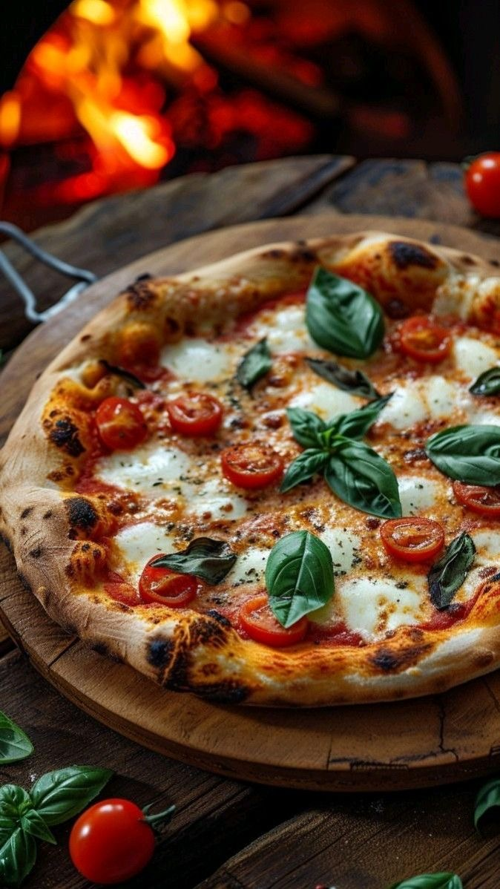

Европа


Хлеб и выпечка: основа ежедневного рациона — хлеб, булочки, круассаны, багеты.
Паста и пицца: итальянские блюда, популярные по всей Европе.
Мясо: свинина, говядина, утка (особенно во Франции). Популярны колбаски и мясные нарезки (салями, ветчина).
Картофель: подается вареным, жареным или в виде картофеля фри.
Сыр: сорта варьируются от страны к стране (французские, итальянские, голландские, швейцарские сыры).
Овощи: квашеная капуста, томаты, огурцы, салатные листья.
Рыба и морепродукты: популярны, особенно в средиземноморских странах (паэлья, рыба, ракообразные).
Супы: густой суп-гуляш или овощные супы (минестроне).